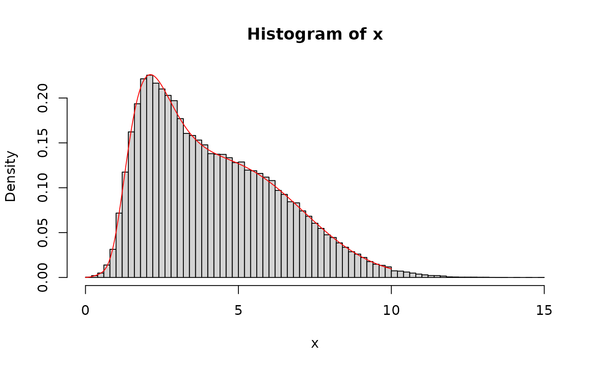

To accomplish the nonlinear fit of a probability distribution function (PDF), different optimization algorithms can be used. Each algorithm will return a different set of estimated parameter values. AIC and BIC are not useful (in this case) to decide which parameter set of values is the best. The goodness-of-fit tests (GOF) can help in this case. Please, see below the examples on how to use this function.
mcgoftest(varobj, model, ...)
# S4 method for numeric_OR_matrix,missing
mcgoftest(
varobj,
model = NULL,
distr = NULL,
pars = NULL,
num.sampl = 999,
sample.size = NULL,
stat = c("ks", "ad", "sw", "rmse", "chisq", "hd"),
min.val = NULL,
breaks = NULL,
par.names = NULL,
seed = 1,
num.cores = 1L,
tasks = 0L,
verbose = TRUE
)
# S4 method for numeric,CDFmodel
mcgoftest(
varobj,
model,
num.sampl = 999,
sample.size = NULL,
stat = c("ks", "ad", "sw", "rmse", "chisq", "hd"),
min.val = NULL,
breaks = NULL,
par.names = NULL,
seed = 1,
num.cores = 1L,
tasks = 0L,
verbose = TRUE
)
# S4 method for numeric_OR_matrix,CDFmodelList
mcgoftest(
varobj,
model,
num.sampl = 999,
sample.size = NULL,
stat = c("ks", "ad", "sw", "rmse", "chisq", "hd"),
min.val = NULL,
breaks = NULL,
par.names = NULL,
seed = 1,
num.cores = 1L,
tasks = 0L,
verbose = TRUE
)
# S4 method for ANY,nls
mcgoftest(
varobj,
model,
num.sampl = 999,
sample.size = NULL,
stat = c("ks", "ad", "sw", "rmse", "chisq", "hd"),
min.val = NULL,
breaks = NULL,
par.names = NULL,
seed = 1,
num.cores = 1L,
tasks = 0L,
verbose = TRUE
)
# S4 method for ANY,nlsModel
mcgoftest(
varobj,
model,
num.sampl = 999,
sample.size = NULL,
stat = c("ks", "ad", "sw", "rmse", "chisq", "hd"),
min.val = NULL,
breaks = NULL,
par.names = NULL,
seed = 1,
num.cores = 1L,
tasks = 0L,
verbose = TRUE
)
# S4 method for ANY,nls.lm
mcgoftest(
varobj,
model,
distr,
num.sampl = 999,
sample.size = NULL,
stat = c("ks", "ad", "sw", "rmse", "chisq", "hd"),
min.val = NULL,
breaks = NULL,
par.names = NULL,
seed = 1,
num.cores = 1L,
tasks = 0L,
verbose = TRUE
)A a vector containing observations, the variable for which the CDF parameters was estimated or the discrete absolute frequencies of each observation category.
A nonlinear regression model from one of the following classes: "CDFmodel", "CDFmodelList", "NLM", and "nls.lm".
The possible options are:
The name of the cumulative distribution function (CDF).
A concrete CDF, defined by the user, from where to estimate the cumulative probabilities.
A numerical vector carrying discrete absolute frequencies for the same categories provided in varobj.
NULL value (default). In this cases the Shapiro-Wilk test of normality is applied. The jackknife estimator of a parameter of Shapiro-Wilk statistic is accomplished.
CDF model parameters. A list of parameters to evaluate the CDF.
Number of resamplings.
Size of the samples used for each sampling.
One string denoting the statistic to used in the testing:
"ks": Kolmogorov–Smirnov.
"ad": Anderson–Darling statistic.
"sw": Shapiro-Wilk test of normality.
"chisq: Pearson's Chi-squared.
"rmse": Root Mean Square of the error.
"hd": Hellinger Divergence statistics.
A number denoting the lower bound of the domain where CDF is defined.
Default is NULL. Basically, the it is same as in function
hist. If breaks = NULL, then function
'nclass.FD' (see nclass is applied to estimate
the breaks.
(Optional) The names of the parameters from distr function. Some distribution functions would require to provide the names of their parameters.
An integer used to set a 'seed' for random number generation.
Parameters for parallel computation using package
BiocParallel-package: the number of cores to use,
i.e. at most how many child processes will be run simultaneously (see
bplapply and the number of tasks per job (only
for Linux OS).
if verbose, comments and progress bar will be printed.
A numeric vector with the following data:
Statistic value.
mc_p.value: the probability of finding the observed, or more extreme, results when the null hypothesis \(H_0\) of a study question is true obtained Monte Carlo resampling approach.
The test is intended mostly for continuous distributions. Basically, given the set of parameter values pars from distribution distr, num.sampl sets of random samples will be generated, each one of them with sample.size element. The selected statistic pars will be computed for each randomly generated set (b_stats) and for sample varobj (s_stat). Next, the bootstrap p-value will be computed as: \(mean(c(s_stat, b_stats) >= s_stat)\).
If both variables, varobj and distr, are
numerical vectors, then tableBoots function is applied. That
is, the problem is confronted as a \(n x m\) contingency independence test,
since there is no way to prove that two arbitrary sequences of integer
numbers would follow the same probability distribution without provide
additional information/knowledge.
If sampling size is lesser the size of the sample, then the test becomes a Monte Carlo test. The test is based on the use of measures of goodness of fit, statistics. The following statistics are available (and some limitations for their application to continuous variables are given):
Kolmogorov- Smirnov statistic ('ks'). Limitations: sensitive to ties [1]. Only the parametric Monte Carlo resampling (provided that there is not ties in the data) can be used.
Anderson–Darling statistic ('ad') [2]. Limitation: by construction, it depends on the sample size. So, the size of the sampling must be close to the sample size if Monte Carlo resampling is used, which could be a limitation if the sample size is too large [2]. In particular, could be an issue in some genomic applications. It is worth highlighting that, for the current application, the Anderson–Darling statistic is not standardized as typically done in testing GoF for normal distribution with Anderson–Darling test. It is not required since, the statistic is not compared with a corresponding theoretical value. In addition, since the computation of this statistic requires for the data to be put in order [2], it does not make sense to perform a permutation test. That is, the maximum sampling size is the sample size less 1.
Shapiro-Wilk statistic ('sw') [5]. A Jackknife resampling is applied, instead of a Monte Carlo resampling. Simulation studies suggest that Shapiro-Wilk test is the most powerful normality test, followed by Anderson-Darling test, Lillie/ors test and Kolmogorov-Smirnov test [6]. In this case, a jackknife resampling is applied (leave-one-out) and the p-value for the mean of Shapiro-Wilk statistic is returned.
Pearson's Chi-squared statistic ('chisq'). Limitation: the
sample must be discretized (partitioned into bins), which is
could be a source of bias that leads to the rejection of the
null hypothesis. Here, the discretization is done using
function the resources from function
hist.
Root Mean Square statistic ('rmse'). Limitation: the same as 'chisq'.
Hellinger Divergence statistic ('hd'). Limitation: the same as 'chisq'.
If the argument distr must be defined in environment-namespace from any package or the environment defined by the user. if \(missing( sample.size )\), then \(sample.size <- length(varobj) - 1\).
Notice that 'chisq', 'rmse', and 'hd' tests can be applied to testing two discrete probability distributions as well. However, here, mcgoftest function is limited to continuous probability distributions.
Additionally, the only supported n-dimensional probability distribution is
Dirichlet Distribution (Dir). The GOF for Dir is based on the fact
that if a variable \(x = (x_1, x_2, ...x_n)\) follows Dirichlet
Distribution with parameters \(\alpha = \alpha_1, ... , \alpha_n\) (all
positive reals), in short, \(x ~ Dir(\alpha)\), then \(x_i ~
Beta(\alpha_i, \alpha_0 - \alpha_i)\), where Beta(.) stands for the Beta
distribution and \(\alpha_0 = \sum \alpha_i\) (see Detail section,
dirichlet function, and example 5).
Feller, W. On the Kolmogorov-Smirnov Limit Theorems for Empirical Distributions. Ann. Math. Stat. 19, 177–189 (1948).
Anderson, T. . & Darling, D. A. A Test Of Goodness Of Fit. J. Am. Stat. Assoc. 49, 765–769 (1954).
Watson, G. S. On Chi-Square Goodness-Of-Fit Tests for Continuous Distributions. J. R. Stat. Soc. Ser. B Stat. Methodol. 20, 44–72 (1958).
A. Basu, A. Mandal, L. Pardo, Hypothesis testing for two discrete populations based on the Hellinger distance. Stat. Probab. Lett. 80, 206–214 (2010).
Patrick Royston (1982). An extension of Shapiro and Wilk's W test for normality to large samples. Applied Statistics, 31, 115–124. doi: 10.2307/2347973.
Y. Bee Wah, N. Mohd Razali, Power comparisons of Shapiro-Wilk, Kolmogorov-Smirnov, Lilliefors and Anderson-Darling tests. J. Stat. Model. Anal. 2, 21–33 (2011).
Distribution fitting: fitMixDist,
fitdistr, fitCDF, and
bicopulaGOF.
## ======== Example 1 =======
# Let us generate a random sample a from a specified Weibull distribution:
# Set a seed
set.seed(1)
# Random sample from Weibull( x | shape = 0.5, scale = 1.2 )
x <- rweibull(10000, shape = 0.5, scale = 1.2)
# MC KS test accept the null hypothesis that variable x comes
# from Weibull(x | shape = 0.5, scale = 1.2), while the standard
# Kolmogorov-Smirnov test reject the Null Hypothesis.
mcgoftest(x,
distr = "weibull", pars = c(0.5, 1.2), num.sampl = 500,
sample.size = 1000, num.cores = 4
)
#> *** Permutation GoF testing based on Kolmogorov-Smirnov statistic ( parametric approach ) ...
#>
|
| | 0%
|
|================== | 25%
|
|=================================== | 50%
|
|==================================================== | 75%
|
|======================================================================| 100%
#>
#> KS.stat.D mc_p.value KS.stat.p.value sample.size num.sampl
#> 9.030005e-03 1.000000e+00 3.886046e-01 1.000000e+03 5.000000e+02
## ========= Example 2 ======
# Let us generate a random sample a random sample from a specified Normal
# distribution:
# Set a seed
set.seed(1)
x <- rnorm(10000, mean = 1.5, sd = 2)
# MC KS test accept the null hypothesis that variable x comes
# from N(x | mean = 0.5, sd = 1.2), while the standard
# Kolmogorov-Smirnov test reject the Null Hypothesis. This an old KS issue,
# well known by statisticians since the 1970s.
mcgoftest(x,
distr = "norm", pars = c(1.5, 2), num.sampl = 500,
sample.size = 1000, num.cores = 1
)
#> *** Permutation GoF testing based on Kolmogorov-Smirnov statistic ( parametric approach ) ...
#> KS.stat.D mc_p.value KS.stat.p.value sample.size num.sampl
#> 8.022461e-03 1.000000e+00 5.404925e-01 1.000000e+03 5.000000e+02
## ========= Example 3 ======
## Define a Weibull 3-parameter distribution function.
## Functions must be defined out of the example section.
if (FALSE) {
pwdist <- function(x, pars) {
pweibull(x - pars[1],
shape = pars[2],
scale = pars[3]
)
}
rwdist <- function(n, pars) {
rweibull(n,
shape = pars[2],
scale = pars[3]
) + pars[1]
}
## A random generation from Weibull-3P
set.seed(123)
pars <- c(mu = 0.9, shape = 1.4, scale = 3.7)
w <- rwdist(200, pars = pars)
## Testing GoF
mcgoftest(
varobj = w, distr = "wdist", pars = list(pars), num.sampl = 100,
sample.size = 199, stat = "chisq", num.cores = 4, breaks = 100,
seed = 123
)
}
## ========= Example 4 ======
## ----- Testing GoF of a mixture distribution. ----
## Define a mixture distribution to be evaluated with functions 'mixtdistr'
## (see ?mixtdistr). In the current case, it will be mixture of a Log-Normal
## and a Weibull distributions:
phi <- c(0.37, 0.63) # Mixture proportions
args <- list(
lnorm = c(meanlog = 0.837, sdlog = 0.385),
weibull = c(shape = 2.7, scale = 5.8)
)
## Sampling from the specified mixture distribution
set.seed(123)
x <- rmixtdistr(n = 1e5, phi = phi, arg = args)
hist(x, 100, freq = FALSE)
x1 <- seq(0, 10, by = 0.001)
lines(x1, dmixtdistr(x1, phi = phi, arg = args), col = "red")

## The GoF for the simulated sample
pars <- c(list(phi = phi), arg = list(args))
mcgoftest(
varobj = x, distr = "mixtdistr", pars = pars, num.sampl = 999,
sample.size = 999, stat = "chisq", num.cores = 4, breaks = 200,
seed = 123
)
#> *** Permutation GoF testing based on Pearson's Chi-squared statistic ( parametric approach ) ...
#>
|
| | 0%
|
|================== | 25%
|
|=================================== | 50%
|
|==================================================== | 75%
|
|======================================================================| 100%
#>
#> Chisq mc_p.value sample.size num.sampl
#> 135.5693 0.9930 999.0000 999.0000
#' ## ========= Example 5 ======
## Shapiro-Wilk test of normality.
set.seed(151)
r <- rnorm(21, mean = 5, sd = 1)
shapiro.test(r) # Classical test
#>
#> Shapiro-Wilk normality test
#>
#> data: r
#> W = 0.92578, p-value = 0.1133
#>
mcgoftest(r, stat = "sw")
#> *** Monte Carlo GoF testing based on Shapiro-Wilk statistic ( parametric approach ) ...
#> SW.stat.p.value jackknife_p.value sample.size num.sampl
#> 0.1132638 0.1353460 20.0000000 21.0000000
## ========= Example 6 ======
## GoF for Dirichlet Distribution (these examples can be run,
## the 'do not-run' is only to prevent time consuming in R checking)
if (FALSE) {
set.seed(1)
alpha <- c(2.1, 3.2, 3.3)
x <- rdirichlet(n = 100, alpha = alpha)
mcgoftest(
varobj = x, distr = "dirichlet",
pars = alpha, num.sampl = 999,
sample.size = 100, stat = "chisq",
par.names = "alpha",
num.cores = 4, breaks = 50,
seed = 1
)
## Now, adding some noise to the sample
set.seed(1)
x <- x + replicate(3, runif(100, max = 0.1))
x <- x / rowSums(x)
mcgoftest(
varobj = x, distr = "dirichlet",
pars = alpha, num.sampl = 999,
sample.size = 100, stat = "chisq",
par.names = "alpha",
num.cores = 4, breaks = 50,
seed = 1
)
}
## ========= Example 7 ======
## Testing multinomially distributed vectors
## A vector of probability parameters
set.seed(123)
prob <- round(runif(12, min = 0.1, max = 0.8), 2)
prob <- prob / sum(prob) # To normalize the probability vector
## Generate multinomially distributed random numeric vectors
r <- rmultinom(12, size = 120, prob = prob)
## A list the parameter values must be provided
pars <- list(size = 120, prob = prob)
mcgoftest(r,
distr = "multinom", stat = "chisq",
pars = pars, sample.size = 20,
num.sampl = 50
)
#> *** Monte Carlo GoF testing based on Pearson's Chi-squared statistic ( parametric approach ) ...
#> Chisq mc_p.value sample.size num.sampl
#> 240.685 1.000 20.000 50.000
## ========= Example 8 ======
## Testing whether two discrete probabilities vectors
## would come from different probability distributions.
set.seed(1)
## Vector of absolute frequencies
n <- 12
alpha <- round(runif(n, min = 0.1, max = 0.8) * 10, 1)
x1 <- round(runif(n = n) * 100)
## Add some little noise
x2 <- x1 + round(runif(n, min = 0.1, max = 0.2) * 10)
mcgoftest(
varobj = x1, distr = x2,
num.sampl = 999,
stat = "chisq",
seed = 1
)
#> *** Monte Carlo GoF testing based on Pearson's Chi-squared statistic ( non-parametric approach ) ...
#> [1] 1
## Compare it with Chi-square test from R package 'stat'
chisq.test(rbind(x1, x2), simulate.p.value = TRUE, B = 2e3)$p.value
#> [1] 1
## Add bigger noise to 'x1'
x3 <- x1 + round(rnorm(n, mean = 5, sd = 1) * 10)
mcgoftest(
varobj = x1, distr = x3,
num.sampl = 999,
stat = "chisq",
seed = 1
)
#> *** Monte Carlo GoF testing based on Pearson's Chi-squared statistic ( non-parametric approach ) ...
#> [1] 0.001
## Chi-square test from R package 'stat' is consistent with 'mcgoftest'
chisq.test(rbind(x1, x3), simulate.p.value = TRUE, B = 2e3)$p.value
#> [1] 0.00149925
## We will always fail in to detect differences between 'crude' probability
## vectors without additional information.
chisq.test(x = x1, y = x3, simulate.p.value = TRUE, B = 2e3)$p.value
#> [1] 1